Our Vision
To create a safe and private digital space where students can seek emotional and mental health support early through relatable peer counselors, reducing stigma and strengthening peer support in schools.
A Form 3 PBL & Techno Project by CityBoiii
CityBuddy is a mobile app that helps secondary school students reach out for emotional and mental health support more comfortably — by connecting them with relatable peer counsellors (PRS) and adult counsellors, in a space built for privacy and trust.
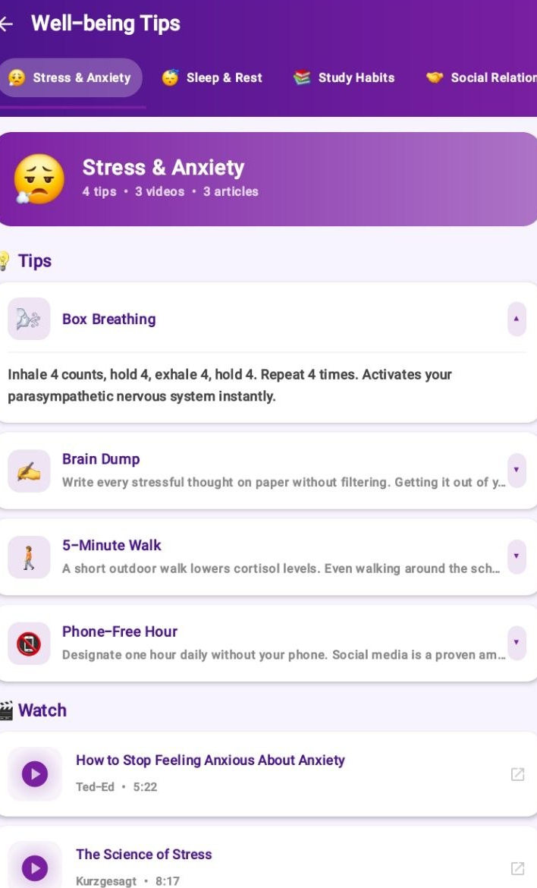
CityBuddy is a mobile application designed to help secondary school students seek emotional and mental health support more comfortably, by connecting them with relatable peer counsellors (PRS) and adult counsellors — in a safe, private digital space.
To create a safe and private digital space where students can seek emotional and mental health support early through relatable peer counselors, reducing stigma and strengthening peer support in schools.
Group CityBoiii
Five students, one shared goal — building a safer way for classmates to ask for help.
Lead App Development
Main and lead developer, responsible for driving the app's build from concept to working product.
Second Developer · Data Collection
Supports app development and led the collection of data used in the project.
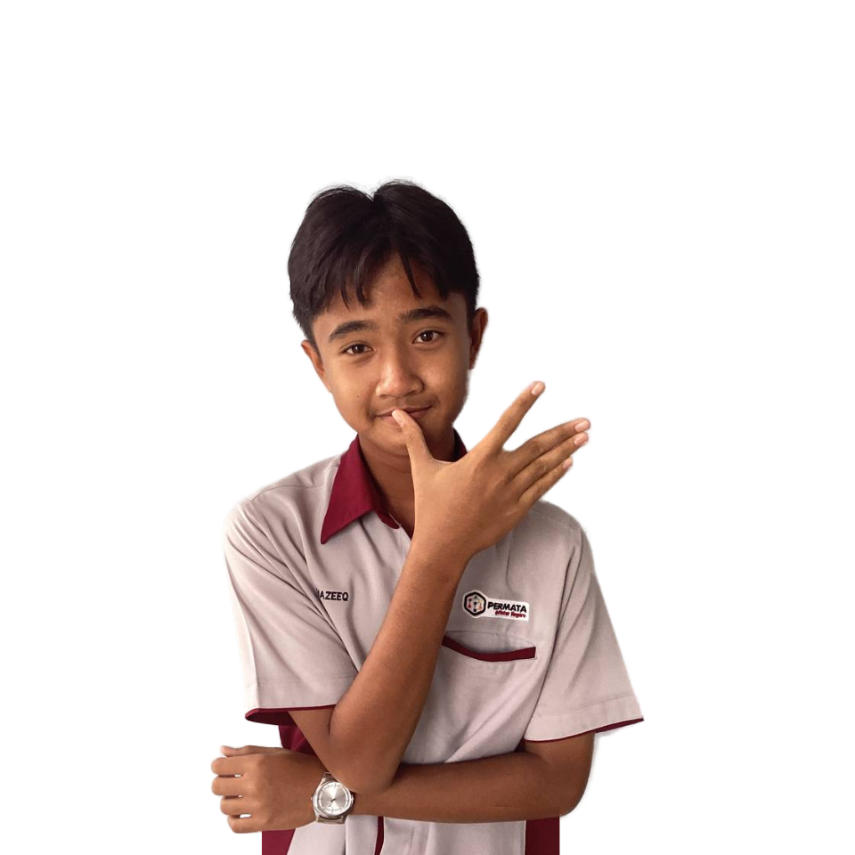
Ideation · Business Plan
Shaped the core concept of CityBuddy and contributed to the project's business planning.
Business Plan · Promotion Video
Contributed to business planning and led the team's promotional video.
Data Collection
Contributed to gathering the data that informs CityBuddy's support-matching concept.
Across the project, the team organised its work under three core roles:
Many students hesitate to seek help from adult counsellors due to fear, stigma, and lack of relatability, causing emotional and personal issues to go unaddressed. Although Pembimbing Rakan Sebaya (PRS) exists in schools, there is no private and structured platform for students to easily connect with them — creating a gap in early intervention and peer-based emotional support.
Secondary school students aged 13–18 who may hesitate to seek help from adult counsellors because of social anxiety or fear of judgment.
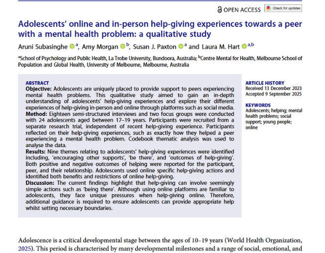
CityBuddy is an app that lets students arrange meet-ups between adult counsellors and young counsellors (PRS) — making it easier, and more comfortable, to ask for help.
How a student moves through CityBuddy — from first opening the app to finding the right person to talk to.
CityBuddy's interface went through several stages before reaching its current form. Early wireframes are development-stage concepts, shown here separately from the final implemented screens.
Early low-fidelity ideas exploring the app's core screens.
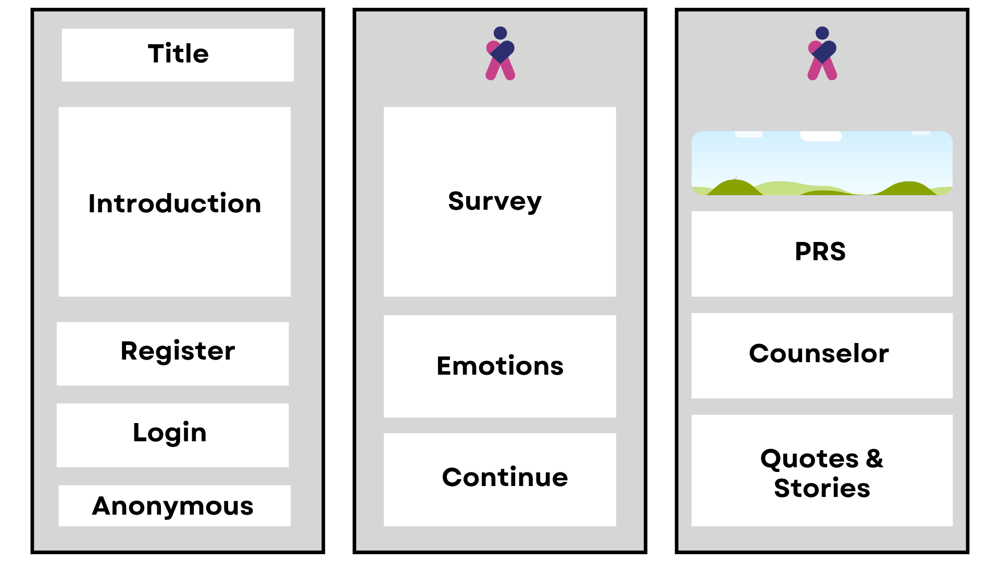
The implemented, polished screens used in the current build of CityBuddy.
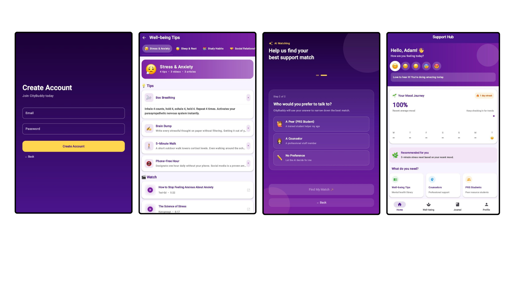
There were many design improvements over time. New screens or UI usually got opinions from the entire team to ensure the project runs smoothly.
What a student can actually do inside CityBuddy.
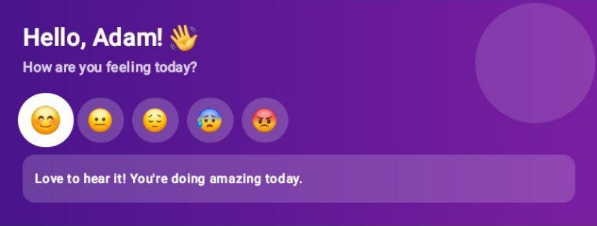
A short, supportive message to start the day on a kinder note.
Why it matters: small, consistent positivity helps normalise checking in with your own emotions.
Helps students: builds a gentle daily habit of self-awareness.
A simple one-tap check-in to record how a student is feeling right now.
Why it matters: naming a feeling is often the first step to dealing with it.
Helps students: makes emotional check-ins quick, low-pressure, and routine.
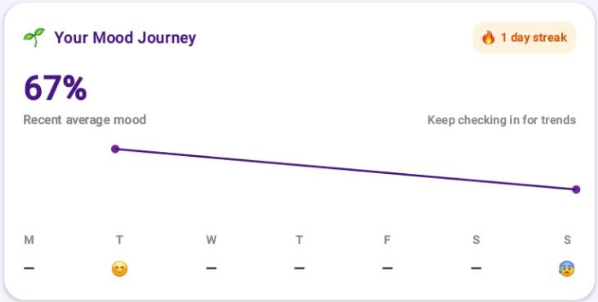
A visual timeline of a student's recorded moods over time.
Why it matters: patterns are easier to notice when they're visible, not just remembered.
Helps students: supports reflection and early self-awareness of emotional patterns.
Tracks ongoing engagement with mood-related check-ins.
Why it matters: gentle consistency reinforces the habit of checking in.
Helps students: encourages students to keep showing up for themselves.
Videos, reading material, and practical tips to help relieve stress.
Why it matters: gives students accessible, bite-sized coping tools whenever they need them.
Helps students: supports healthier, independent coping habits.
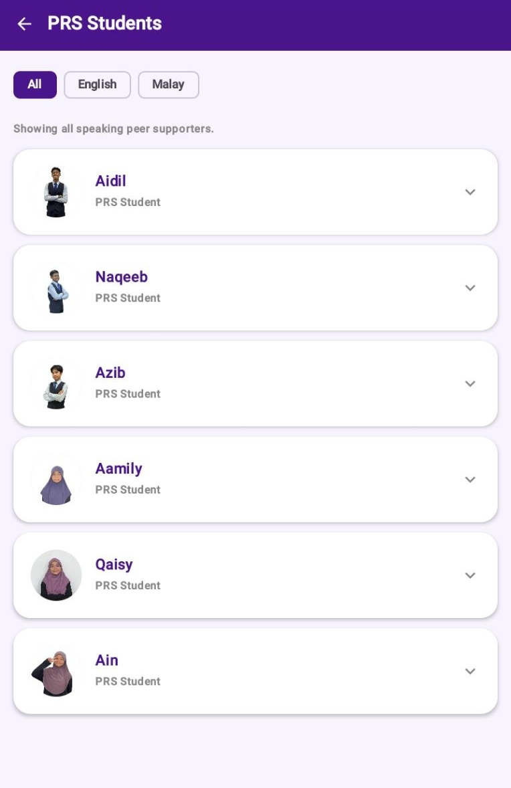
Lets students choose who they want to share their problems with — a PRS peer or an adult counsellor.
Why it matters: choice and relatability lower the barrier to reaching out.
Helps students: connects them with the kind of support they feel most comfortable with.
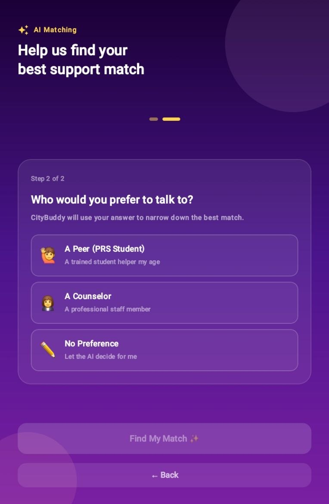
Students can seek support without revealing their identity.
Why it matters: privacy directly addresses the fear of judgment at the centre of the problem.
Helps students: makes reaching out feel safer, especially for sensitive topics.
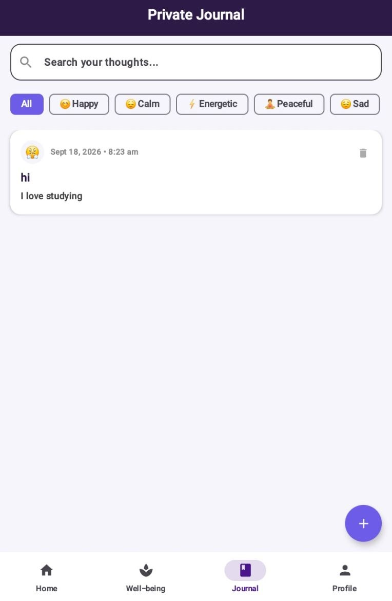
A private space to write thoughts, create entries, and revisit them later.
Why it matters: writing things down supports emotional processing even when talking feels hard.
Helps students: encourages ongoing self-expression at the student's own pace.
How each real student need shaped a specific part of the app.
How CityBuddy uses AI to guide students toward the right kind of support, and how that AI was built.
Gives PRS real-time, gentle suggestions to help a friend open up and talk safely.
Friendly mood check-ins that only alert a human when things seem serious and the student doesn't respond to supportive prompts.
Helps students anonymously describe what they need, then suggests an appropriate counsellor or PRS fit from the people available.
When a student fills in the initial emotional survey or describes what they need, the system uses a decision tree to route them to an appropriate support person.
A CSV of example sentences describing how students might express themselves, each labelled with an appropriate support category.
A neural network is trained in Google Colab through trial and error: guess, calculate error, adjust, repeat — for roughly 10–20 epochs.
The trained model learns to associate common phrases with the right kind of support.
Converted with the TFLite Converter (using Flex Ops where needed) so it can run in a mobile environment.
The TensorFlow Lite model is embedded directly into CityBuddy.
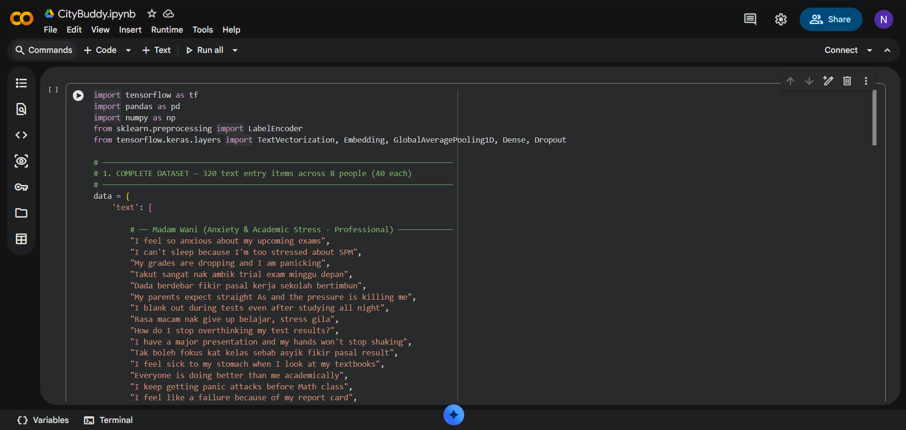
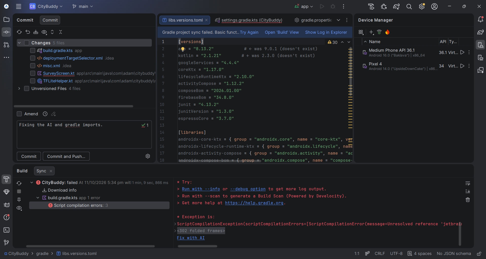
CityBuddy was reviewed and refined through a continuous feedback loop.
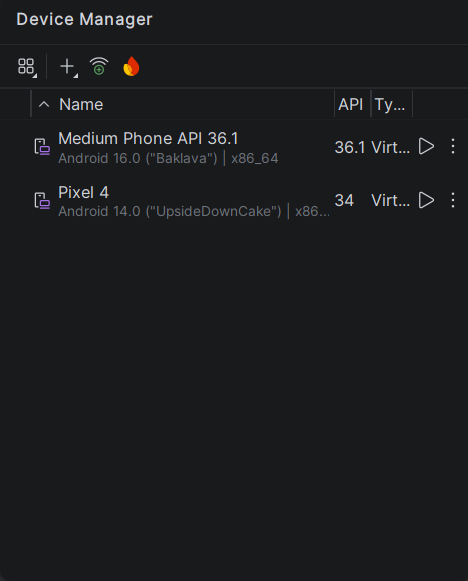
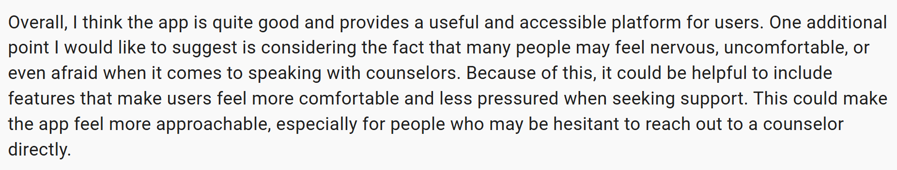
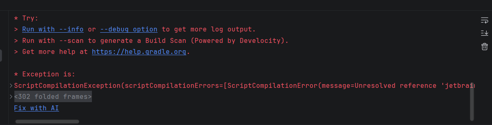
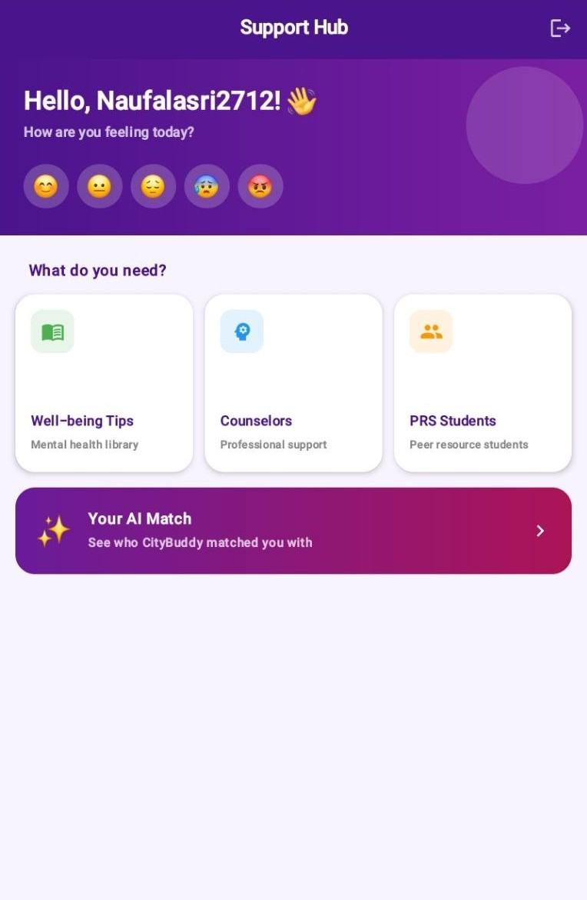
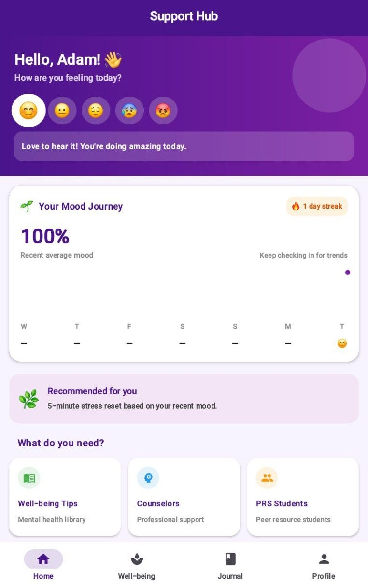
The promotional video, project documentary, and a look behind the scenes.
Why should people use CityBuddy? Problem → CityBuddy solution → key features → benefits → call to action.
The full PBL journey, from problem to final product.
A walk through CityBuddy's main screens, from sign-in to journalling.
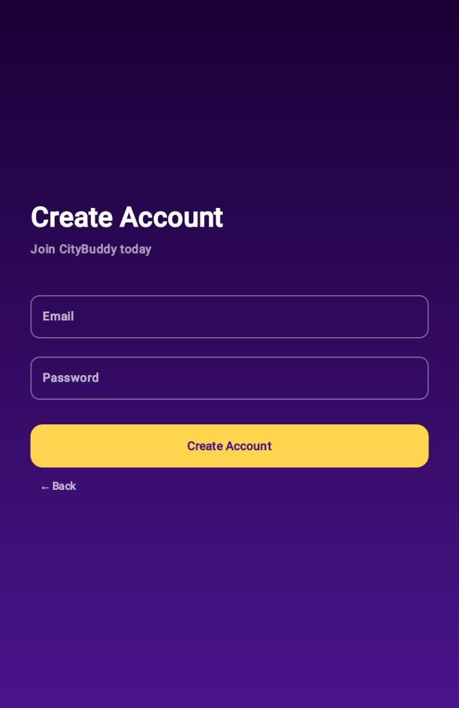
Sign-up / Sign-in
Survey
Home
Well-Being Tips
Counselor / Peers
Journal
https://drive.google.com/drive/folders/17H_UXuD_DDhhjqNcHdzAdY2uQ1G_QKv7?usp=sharing
CityBuddy is designed to make a difference across the whole school support system — not just for the student asking for help.
Aims to give students an easier, more private first step toward getting support.
Intended to give PRS students a clearer, guided way to support their peers.
Designed to help adult counsellors reach students who may not otherwise come forward.
Aims to strengthen how existing school support structures, like PRS, are actually used.
By addressing student hesitation, enabling private emotional expression, offering relatable peer support, and supporting early intervention, CityBuddy aims to close the gap identified in our problem statement.
This website captures the full journey behind CityBuddy — not only the finished app.
Adding smarter AI by training on more data over time.
A proposed enhancement where the streak system collects data to show a user's mood over time.
The apps way of contacting is only through email and the counselor's don't have their own version of the app.
The journal requires more features to be complete and creating a profile should have more customization.
Biometrics, better profile cuztomization and better contacting with counselors/peers.
The app could add more screens for well-being and there can be a new chat screen for counselors/peers.